ImageMagick Examples --
 Text to Image Handling
Text to Image Handling
Index
Creating text labels, or adding text to images is probably one of the most
basic and common operations for which ImageMagick is used. It is also one of
the most simplest, but with scope for some very fancy results. As such this
is a good place to start our exploration of IM's capabilities.
If you also specify a "
You can also use "
Of course if you do not set a "
As you can see by setting a "
You can still adjust the position of the label in
that extra space by adjusting the "
Of course if you do not set a "
Basically that means the above "
This label is 40 pixels high, the undefined pointsize of the text was adjusted
to fit that height, and then the undefined width was set to fit the drawn
text. Exacly as you would expect.
Of course in this case there will again be little if no extra space for any
"
As you can see "
One important feature of IM is that it can read the text data to use from a
file. This is done by prefixing the filename with an 'at' character
'
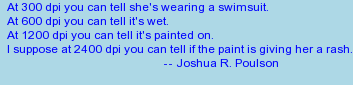
Notice that the filename I used was just a '
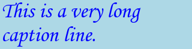
By default the text is all left justified, however as of IM version 6.2.0,
"
![[IM Output]](caption_centered.gif) If you do provide a height as well as a width to the "
If you do provide a height as well as a width to the "
![[IM Output]](caption_height.gif) Please note however that if the text will not fit (height-wise) into the
"
Please note however that if the text will not fit (height-wise) into the
"
![[IM Output]](caption_height_toosmall.gif)
![[IM Output]](caption_filled.gif)
Note that the ONLY difference between the last two examples is the "
You can read the text to be drawn from a file, or standard input (from a
previous pipeline command), using the '
![[IM Output]](caption_file.gif) As you can see newlines in the input text will (as of IM v6.2.5) will be
treated as paragraph separators. This includes any final newlines in the
input file. Of course "
As you can see newlines in the input text will (as of IM v6.2.5) will be
treated as paragraph separators. This includes any final newlines in the
input file. Of course "
![[IM Output]](caption_one_line.gif) As you can see this works a lot better.
However often what you want is to treat a blank line as a paragraph break.
That means you need to remove all newlines, except those involved with blank
lines. Here is a special "
As you can see this works a lot better.
However often what you want is to treat a blank line as a paragraph break.
That means you need to remove all newlines, except those involved with blank
lines. Here is a special "
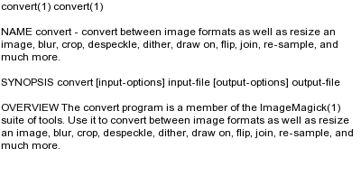
For more details on these settings see Undercolor Box
below, and Stroke, StrokeWidth in the drawing
section.
Should produce a label that is 1 inch high on a 90 dpi display. It is on my
display! You can measure the height of these images on your screen, to check
on your displays resolution.
As the number of pixels per inch is larger, the drawn font is also naturally
larger in terms of the number of pixels in the image, and thus producing a
larger image. Different image programs often have a different default
density, and this may cause fonts to appear differentially when drawn by
different programs, even at the same point size.
Note that "
Some fonts may even extend well beyond the normal line separation boundaries,
extending well above or more commonly below the line spacing. This is
especially true of hand script fonts.
The look of a font is also effected by the fonts "
As you can see IM manages to contain this font in a label without cutting of
the fonts leader or trailing graphics.
The reason this problem existed is because the fonts 'glyphs' or character
description draw outside the fonts defined boundaries for specific
letters, allowing them to overlap (generally either above or below) the other
characters within the font.
This is a problem with the way the font itself is designed and defined, and
was not the fault of IM, though IM now handles these odd situations in the
best interests of the users. In other situations it could still be a problem,
and one that can not be solved simply due to multi-line text interactions.
For more information see Bounding Box Overflow
examples below, for a more precise description.
![[IM Output]](label_i8n.gif) However few people have keyboards or editors properly set up to handle unicode character
input. Even if you can not directly type unicode characters, one simple
solution is to just 'copy-n-paste' the desired characters from some existing
UTF-8 text file, or web page. I do!
If the UTF-8 text you wanting to draw has already been generated you can read
it directly from a file using '
However few people have keyboards or editors properly set up to handle unicode character
input. Even if you can not directly type unicode characters, one simple
solution is to just 'copy-n-paste' the desired characters from some existing
UTF-8 text file, or web page. I do!
If the UTF-8 text you wanting to draw has already been generated you can read
it directly from a file using '
![[IM Output]](label_utf8.gif)
We can also generate UTF-8 strings from unicode character codes using the
'GNU' "
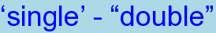
On other systems (like Mac OSX and Windows) you can use the perl
"
![[IM Output]](label_unifun.gif) For more information and to look up the unicode character codes for various
languages and symbols see Unicode
Character Code Charts.
Not only can unicode characters contain international characters, but with the
right font you can also use special 'symbol' sets it defines. The most famous
these is the 'DingBats' symbol font. This font has become so common that it is
now part of the standard Unicode fontset.
For example here I extract the first 24 characters of the 'DingBats' unicode
symbol area using a special "
For more information and to look up the unicode character codes for various
languages and symbols see Unicode
Character Code Charts.
Not only can unicode characters contain international characters, but with the
right font you can also use special 'symbol' sets it defines. The most famous
these is the 'DingBats' symbol font. This font has become so common that it is
now part of the standard Unicode fontset.
For example here I extract the first 24 characters of the 'DingBats' unicode
symbol area using a special "
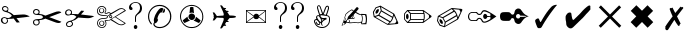
The question marks in the above are specific characters which were not defined
by either unicode, or in the windows '
![[IM Output]](label_heart_20.gif)
![[IM Output]](label_heart_60.gif)
![[IM Output]](label_heart_80.gif) The important thing to remember is that all truetype fonts are actually
a special type of Vector Image Format. With
multiple images (one for each character) in the font. As they are vector
images, it means the font should allow you 'draw' a character, shape or symbol
at any just about any size (scale), using the controls provided by "
The important thing to remember is that all truetype fonts are actually
a special type of Vector Image Format. With
multiple images (one for each character) in the font. As they are vector
images, it means the font should allow you 'draw' a character, shape or symbol
at any just about any size (scale), using the controls provided by "
Here is some other interesting symbols I have found in various symbol fonts
I have collected for one reason or another...
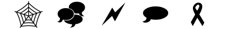
![[IM Output]](label_ltgidding.gif) 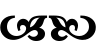
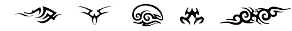
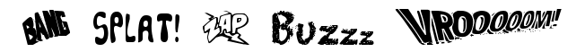
This is only a small sample of what is available. Huge libraries of just
about every symbol, shape, or image, imaginable is available on the
WWW for you to browse and download.
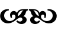
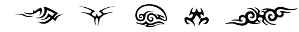
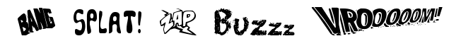
This is only a small sample of what is available. Huge libraries of just
about every symbol, shape, or image, imaginable is available on the
WWW for you to browse and download.
Note that the actual kerning value can be a floating point value, or even a
negative value.
For another example of using a negative "
Note how you can not only increase the size of a space character between the
words but also decrease the default size.
Note however that spaces will cause the words to be re-aligned to pixel
boundaries (unlike Inter-character Kerning above) so
the output of a label with spaces set to zero will still be different to a
label that does not contain any spaces at all.
Both the Inter-character Kerning and the Inter-word Spacing will also effect the results
of IM's ability to automatically fit a text string to a specific sized image.
What is happening is that by setting the "
![[IM Output]](label_lspace_off.gif) 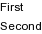
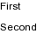
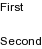
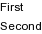
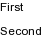
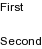
![[IM Output]](label_lspace-5.gif)
![[IM Output]](label_lspace-10.gif) To make best use of this setting you need to be able to calculate the normal
line spacing for a specific font. This is the actual definition of "
To make best use of this setting you need to be able to calculate the normal
line spacing for a specific font. This is the actual definition of "
Of course as previously seen for interword size, adding a constant number of
pixels between text elements will tend to make the text smaller when
automatic pointsize handling is used. That is a final image "
Using a negtive interline spacing can also be used as a rough and ready method
of vertically 'bolding' a line, simply by repeating that line, and subtracting
1 more pixel than the baseline separation.
Of course this will not work if you really want two lines, and not just
bolding text. It also works better with a fixed width font.
Not only do these escape characters effect "
The other important point about escape characters is that while they are used
for command line text arguments. At no time do they apply within the data
being read from a text file (usually read in using the '
For example here I set and the report an images 'label' and 'comment' meta-data
using the two methods to set that information from a source text file.
The "![[IM Text]](info.txt.gif) ,
(no final newline).
,
(no final newline).
Notice that IM did not expand any of the escape character sequences
that it read in using the '
As you can see the label not only contained the input string but also an extra
blank line due to the newline character that the "
Or using something that does not add extra newlines unless you specifically
request it.
Or you can 'junk' that final newline using a tricky little perl one-liner...
In other API's you can look for that final newline before feeding the text to
an IM command via a 'piped open'.
Yes the above is tricky, but that due to some internal IM core library
limitations that are involved. See Accessing Data from other images for more details.
Here is a similar 'escape the escapes' example for "
Of course as previously shown, reading the text from a file (using the
'
In other words when reading from a file you don't have to worry about escaping
things, but can just write exactly the text you want IM to use.
If you see a '
This 'what is escaped' was also a problem with regard to the handling of
escapes from files. Before IM v6.3.3, the following would have produced two
lines, rather than a single line.
As the results of escape handling vary greatly from version to version, in
IM's older than v6.3.3, I recommend that scripts test its escape handling,
adjust themselves if it is important to the programs correct working.
If anyone like to create an automatic test for IM scripts, please
contribute. Or if you find such as test, please let me know.
However you should note that some of the previous Text
Attributes will not work with pango, basically due to its text formatting
requirements. For example while you can set a "
And you can even have Pango 'justify' the text properly using the Define, "
Note however that while text can be justified, spaces and newlines are still
taken into account by the text formatted.
Also pango understands the use of TAB's (unlike label and caption).
However generating columns using TAB's does not work very well as you can't
easily define the 'tab-stops' outside the API. As such using TAB's in this
way is not recommended, except as line and paragraph indentation .
The "
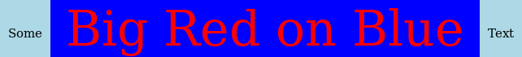
Note that most numerical values are multiplied by a factor of 1024 as such the
the value of "
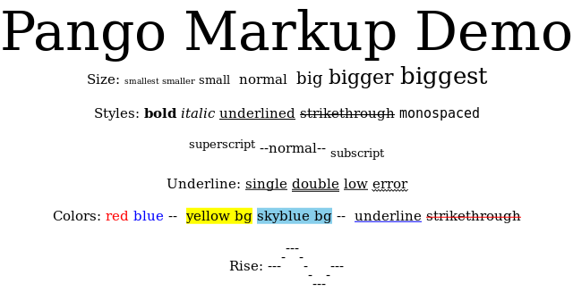
Handling text in this way however had a number of problems. First the text is
drawn onto a large canvas, leaving you with the problem of removing the unused
space, if such space is not wanted. The other is that lines are not
'word-wrapped' but will overflow canvas and get truncated if they are too
long. And finally, for very long text files, multiple pages (images) will be
generated unless some extra precautions are taken.
On the other hand, "
When drawing text, a large 'letter' sized page is created (or the page size or
type specified with a "
I purposely used the 'fixed-width' font '
![[IM Output]](text_trimmed.gif) In the above example "
In the above example "
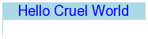
The extra space at bottom of the text is a result of the last 'newline'
character in the text input, creating an extra blank line in the image. But
as you can see the leading and trailing spaces of the input text was
preserved.
If you use a transparent background color in the above, you can then flatten
the trimmed image to magick the undrawn areas into the same color as the
'undercolor' used.
![[IM Output]](text_box_trimmed.gif) The result of the above (except for the added "
The result of the above (except for the added "
![[IM Output]](text_page.gif)
Note how in the last example, any text line that is too long to fit the width
of the page will overflow the page, and not be 'wrapped'. This will
effectively crop and junk the end of the lines. Also if there are too many
lines, then "Postscript/PDF - Pre-formatted Text and Graphics Input
The following gives a standard vector image handling technique that can not
only be used for "
Now we can magick that into an image, trimming the result (as per
"
![[IM Output]](ps_version_raw.gif) Note the use of '
Note the use of '
![[IM Output]](ps_version.gif) The value '
The value '
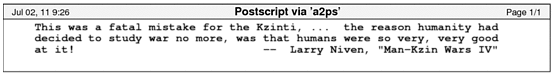
But I would be careful of these adjustments, as it could make things worse.
If you like to have a transparent background instead of white, you can specify a "
![[IM Output]](ps_transparent.png) Notice that the banner still uses an off white color for its backgrounds,
rather than also being made transparent or semi-transparent. That is because
the postscript generated actually draws that background, replacing the default
background of the page (be it white or transparent).
Making the background transparent like this will allow you to overlay your
postscript image on a specific background color.
Notice that the banner still uses an off white color for its backgrounds,
rather than also being made transparent or semi-transparent. That is because
the postscript generated actually draws that background, replacing the default
background of the page (be it white or transparent).
Making the background transparent like this will allow you to overlay your
postscript image on a specific background color.
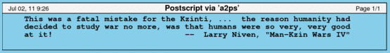
Using a Alpha Compositing Method you can
even overlay it onto a specific background image, or a tiled background.
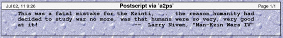
As almost all postscript printers only can darken paper or an overhead
transparency, (this includes color printers), when the above is printed the
banner would be made semi-transparent automatically.
If you also want IM do the same thing, as what a printer would do, you can use
a special '
![[IM Output]](ps_multiply.gif) If you have a color postscript image, you also can simulate a pure black and
white printer onto colored paper by using the special '
If you have a color postscript image, you also can simulate a pure black and
white printer onto colored paper by using the special '
![[IM Output]](ps_overhead.png) Like the "
Like the "
As a final practical example, have a look at my Ray Traced Tetrahedron image. Other similar images can be seen in Studies
into Polyhedra.
The background page was generated from the same data used to produce the
displayed 3D mathematical object. The text data was converted using
"
You can get GhostScript to do it directly.
This prevents the need for IM to generate a large temporary file (for security
and pipelined image handling). As a result of this, direct use of GhostScript
can save quite a lot of file handling and IO processing, and can produce
a major performance boost when processing postscript and PDF files.
However "
However to use it we need to generate a background image of the appropriate
size to draw the font, which can be tricky when drawing some unknown text. See
Auto Sizing of Font Images for ways to solve this
problem.
A lot of extra options, beyond the standard text options also effect how
"
All the above options can also be used within the "
![[IM Output]](draw_mvg.gif) If you really want to make maximum use of "
If you really want to make maximum use of "
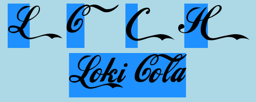
Also note how the '
![[IM Output]](annotate.gif) One of the extra features of the "
One of the extra features of the "
![[IM Output]](annotate_opts.gif) In this example all four annotate arguments are given. Specifically,
X axis rotation, Y axis rotation, and the fonts X and Y position on the
background image.
Also note that the fill pattern (set with "
In this example all four annotate arguments are given. Specifically,
X axis rotation, Y axis rotation, and the fonts X and Y position on the
background image.
Also note that the fill pattern (set with "
![[IM Output]](annotate_rotated.gif)
This can be used to generate angled condensed labeling. For example...
You can also add other information about the current image to the Annotated
string using escape characters. For example lets overwrite the built-in
"
For more information see Special Escape Characters in Text Arguments below.
For other examples of annotating text onto a larger image in various ways
(such as centered on the side, or rotated in the bottom-right corner) see
Practical Text Annotation Examples.
Unfortunately when guessing at the canvas size I had miss-spelt the word
'
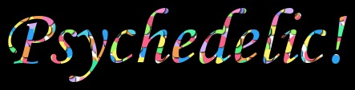
This method is much better than trying to make a guess at just how big your
final image should be, however "
![[IM Output]](invitation_box.jpg) The amount of space around the font can be adjusted using the "
The amount of space around the font can be adjusted using the "
![[IM Output]](invitation_colored.jpg) For example here I use Composite Masking
to replace background and foreground with pattern images.
For example here I use Composite Masking
to replace background and foreground with pattern images.
The Reverse Operator in the above is used to
reorder the images, so the first image becomes the third 'masking' image of
the composition. The foreground ("
 Under Construction
Under Construction

![[diagram]](../img_diagrams/glyph_metrics.gif) A particular font and its individual characters contain a lot of information.
Such information can be very useful to have, especially if you are wanting to
use IM for piecing together the text of many different fonts.
It is also important to remember that most fonts are proportional fonts,
meaning that each individual character will have a different width, and
a different 'natural' advance of the caret (or origin). As such each specific
'string' of characters will be rendered (drawn) a different length without any
real regard to the actual number of characters used in the string.
The exception to this are 'Fixed-Width' fonts, such as "
A particular font and its individual characters contain a lot of information.
Such information can be very useful to have, especially if you are wanting to
use IM for piecing together the text of many different fonts.
It is also important to remember that most fonts are proportional fonts,
meaning that each individual character will have a different width, and
a different 'natural' advance of the caret (or origin). As such each specific
'string' of characters will be rendered (drawn) a different length without any
real regard to the actual number of characters used in the string.
The exception to this are 'Fixed-Width' fonts, such as "
As you can see you get a mixed bag of information you can use: from the
declared bounds of the drawn string (which is not nessarilly the strings
actual bounds), relative to the origin; to the amount the 'carat' (origin)
should advance before drawing the next string.
The full debug output (which is rather verbose, and not shown in the above)
also reports the actual font file used (twice) so you can also use it to check
that you have the right font too.
For the basic basic font metrics, we first draw the font itself with a
transparent color ('
From the results above we can see that a '
Also note that the distance separating lines (baselines actually) should be
purely determined by the point size of the font, and has nothing to do with how
the font is drawn. In out example, as the font has a point size of 72 points,
and a point is defined as 1/72th of an inch, then the baselines should be 1
inch apart. With a current output resolution (density) of 72 pixels per inch,
that means the baselines will be 72 pixels apart.
Interestingly enough that means that for this font, with a 74 pixel bounding
box, the font has a two pixel overlap for the drawing area between the
lines of properly single spaced text!
Also from the above measurements we can see that in drawing the string
"
Height-wise the character was within its defined drawing boundaries, with its
height going from 100 - 43 or 57 pixels above the baseline (hard against its
bounding box) to 60 - 57 or only 3 pixels below the fonts baseline. In other
words this letter does not have a 'descender' drawn in area below the baseline.
From this we can see that the 'A' draws from 3 pixels before the caret
(positioned at +20, but final image is at +17), to 70 - 3 or 67 pixels after
the caret position. In other words this font is slightly wider than its
horizontal bonding box, when drawn.
Note that while this gives you the actual drawn string length, this is
different to the caret offset needed when appending text, (which is defined by
the strings bounding box, and not its drawn length). In other words text
should be appended together using their bounding boxes, and not their actual
drawn length size as we have do in other examples.
Of course if you get a very ill-behaved font, you may like to check how far a
specific string draws beyond its bounds so that you can still provide space
for it, say at the end of a line.
For more information see the document TrueType
Fundamentals (PDF). This shows that even my generalizations above may not
always hold true, though is generally the case.
Note the above examples will only return dimensions in whole pixels, where all
the dimensions used by fonts are floating point numbers. In fact whether a
font is even drawn from a whole pixel (caret) starting point, can be
application dependant, and effect the resulting look of the font.
Now while IM command-line is not designed for 'word processing', it does not mean you can't use it for such. It is just more difficult. Here I will give some examples of mixing text in different fonts and styles, to give people a starting point. The simplest solution people usually think of is to just append "
![[IM Output]](wp_label_append.jpg) However as you can see all the images are vertically aligned to the top of the
image, and unless you use similar fonts, will not look very good.
Alternatively, you can use an append justification trick to align them along the
bottom.
However as you can see all the images are vertically aligned to the top of the
image, and unless you use similar fonts, will not look very good.
Alternatively, you can use an append justification trick to align them along the
bottom.
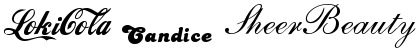
What this did was to add some extra padding to the top of each label, and
cropping them all to the same height before appending them horizontally.
After that a simple "
![[IM Output]](wp_draw_baseline.jpg) As before the trimming of the images is done in two steps.
First draw the text on a base image which contains a vertical blue line. Thus
when we trim the text, only the width of the text image will be trimmed,
leaving all the words at the same baseline height.
After appending them together, we can now remove the blue construction line by
making it fully-transparent. If you are generating just a black and white
image, the better way would be to just extract one of the non-blue channels
instead, which ensures you really do get all of the construction line. A
second trim will then trim the top and bottom sections, shrinking it to the
largest bounding box.
A final flatten to the same color as the as the bounding box then removes all
evidence of its use in constructing the line.
As you can see all the text is now properly baseline aligned, regardless of
the font or the pointsize used.
Of course in these examples I only used black on white text. Other colors can
be used, as long at they don't interfere with the construction line and
transparent background used for text alignment.
With this technique you can now generate mixed font text lines, and vertically
append them all together into a larger document.
You can also see that doing all this is a lot of work, work that is normally
hidden from the user by word processors and web browsers. If you do plan to
do a lot of this sort of stuff, I do suggest you look into the alternatives I
previously mentioned.
As before the trimming of the images is done in two steps.
First draw the text on a base image which contains a vertical blue line. Thus
when we trim the text, only the width of the text image will be trimmed,
leaving all the words at the same baseline height.
After appending them together, we can now remove the blue construction line by
making it fully-transparent. If you are generating just a black and white
image, the better way would be to just extract one of the non-blue channels
instead, which ensures you really do get all of the construction line. A
second trim will then trim the top and bottom sections, shrinking it to the
largest bounding box.
A final flatten to the same color as the as the bounding box then removes all
evidence of its use in constructing the line.
As you can see all the text is now properly baseline aligned, regardless of
the font or the pointsize used.
Of course in these examples I only used black on white text. Other colors can
be used, as long at they don't interfere with the construction line and
transparent background used for text alignment.
With this technique you can now generate mixed font text lines, and vertically
append them all together into a larger document.
You can also see that doing all this is a lot of work, work that is normally
hidden from the user by word processors and web browsers. If you do plan to
do a lot of this sort of stuff, I do suggest you look into the alternatives I
previously mentioned.
![[IM Output]](text_layered.jpg) The 'form image' in this case is just a blank image, but really could be
anything. I also set the background color of the labels to 'wheat' so the
area filled in is visible, but you would normally set this to none.
The above does not use temporary files, but instead uses a pipeline of MIFF format images. This is an example of using
a Image Streaming Format, in which
individual images are simply appended together, on after the other in a file or
pipeline.
This is only a starting point. The form fields can come from some definition
file, while the text to fill in from a database or other data source. Other
attributes can also be set such as the font to use, text rotations and so on.
You could also include both width and height, or if the text should be
word-wrapped using Caption should be used rather than
a Label.
See also Pins in a Map for
another example of this technique, much like the above.
The 'form image' in this case is just a blank image, but really could be
anything. I also set the background color of the labels to 'wheat' so the
area filled in is visible, but you would normally set this to none.
The above does not use temporary files, but instead uses a pipeline of MIFF format images. This is an example of using
a Image Streaming Format, in which
individual images are simply appended together, on after the other in a file or
pipeline.
This is only a starting point. The form fields can come from some definition
file, while the text to fill in from a database or other data source. Other
attributes can also be set such as the font to use, text rotations and so on.
You could also include both width and height, or if the text should be
word-wrapped using Caption should be used rather than
a Label.
See also Pins in a Map for
another example of this technique, much like the above.
Basically ImageMagick can do a lot of things, that does not mean it is the
best tool for those things. For larger document preparations you are better
off treating it as only one part of a larger whole.
The various 'TeX' tools given above are usually a standard install for most
Linux systems, and can combine text and images into an unified whole. More
importantly it keeps text as text, and formats the text appropriately, as
you specify, doing almost all the hard work of word and page wrapping, and
arrangement with the images. But without filling a 'doc' file with useless
formatting garbage. You have full control, or can leave it to make the
decisions.
They provides a way of generating any type of document, from a simple page,
newsletter or even a full book If you are serious about document generation,
then these tools are well worth looking at and learning.
Pango (Linux and MacOSX only) also provides an alternative. It provides many text to image processing features not available in ImageMagick. For example TABs, justification, margins, headers, and so on. It even has a markup language of some kind to allow font changes in the middle of text.
Other solutions also include the many text to postscript conversion programs, such as "a2ps" which I demonstrate in generating an example postscript file in Postscript Handling above. This converts and formats may different types of text files, with word wrapping, bolding and tab control, as well as a reasonably nice header, footer, border, and multi-page options. Of course this is indirect image processing via a Postscript or PDF intermediate language. Another is to layout the text using SVG, or the ImageMagick Drawing Command, though you will then need to deal with the layout. There are lots of tools out there to magick text into images, and most can be combined with ImageMagick to post-process the text image and merge it into your image. This lets ImageMagick get on with what it does best, image processing.
|
| |
|
|
Text Operators in ImageMagick
ImageMagick has a lot of different ways in which you can draw text within an image, highlighting the versatility of the image processing library. This page details specific methods and styles of drawing text. What you have to keep in mind as you study these examples is that ImageMagick is primarily an image converter and modifier. As such each of methods provided are simple text drawing operators, such as adding labels and copyright messages to images. See Annotating Images. All the text operators also understand and use a set of standard text processing settings such as, the "-font", "-pointsize" to use. Also the "-fill" color setting and for more
complex text drawing the "-strokewidth", "-stroke" and "-undercolor" colors. In cases where you actually create a new
image, such as label and captions, the "-background" color setting is
also used.
And finally the newer "-kerning" and "-interword-spacing"
modifiers.
What ImageMagick is not, is a full formatted text and document
processor. If you want heavy text processing, you are better off using a full
interactive word-processor, or batch text formatter like "TeX"
(or or one of its flavors (see A Complete Text Processing
System below). The output of these programs (generally postscript format)
can then be converted into an image and further modified by ImageMagick. That
is, use the right tool for the right job.
That said some mixed font handling can be done. For a starting point look at
Creating Lines of Mixed Font Styles, near the
bottom of this page.
Now, lets now look at the basic ways you can magick text into images. Later
in the next section (Compound Fonts we'll look at
generating some interesting font effects.
Label - Simple Text Label
Basic Labels
Creating a font image using a "label:" image, is the more typical
way of drawing a font quickly in ImageMagick. The biggest advantage is that
generates its own canvas according the current "-background" and "-fill" color settings, which is
sized to match the drawn text.
For example here is a typical generated label.
The above is probably the most typical usage of label, with a font selection
and "{kind=link}
-pointsize"
defining the results. But it by far the least interesting way of generating
text labels.
The 'label:' image generated will also have the
'label' Image Property meta-data
set to the same string. Some file formats, such as MIFF and PNG, will save
that specific property and can be used in later image processing programs.
For and example of using 'label' meta-data, see Montage using Saved Meta-Data for examples.
|
-size" then the generated label image will be created at that
size.
|
{kind=link}
-gravity" to set the position of the label within that larger box.
|
![[IM Output]](label_gravity.gif)
|
-size" for the label, no extra space will be available in the
generated "label:" for "-gravity" to use, making it rather useless.
The problem with using BOTH "-size" and "-pointsize" together is that the text could 'overflow' the
specified image size.
|
![[IM Output]](label_overflow.gif)
|
Before version 6.5.2-4, IM would completely ignore the "-pointsize" setting if
a "-size" setting is
also given. This causes the text in the above images to be auto-sized
according to the 'best fit' handling (see next set of examples).
|
Best Fit to Image
The biggest trick to using labels to generate images of a specific "-size" is NOT to specify a
"-pointsize" for the
label. When this happens IM will have the freedom to try and select a font
size that best fits the image size requested. That is the drawn text
will be adjusted to fit the given size!
|
{kind=link}
-size" setting, you could end up with some extra space to the
right or below the image.
When IM creates a 'bestfit' label, the actual pointsize it used is also
saved into the 'label:pointsize' Image Property, allowing you you use that information later. This
was added to IM v6.6.2-7, during the forum discussion Pointsize Reporting
|
-gravity" setting.
|
![[IM Output]](label_size_gravity.gif)
|
-size" for the label, no extra space will be available in the
generated "label:" for "-gravity" to use, so it only makes sense when you ask for the
image to be a specific size.
Now for the best news. If the "-size" setting you give only contains just width or the height for
the label, the font will be adjusted to best fit that given dimension. The
other dimension not specified will then be auto-adjusted to fit that text!
|
{kind=link}
label:" will always be 160 pixels
wide, with the largest font size for that width. The height of the label will
then be adjusted to suit.
The same thing will be done if the height is specified but not the width.
|
{kind=link}
-gravity" setting to
play with.
Labels over Multiple Lines
The "label:" generator can (as of IM version 6.2.5)
generate multi-line labels.
|
![[IM Output]](label_multiline.gif)
|
label:" understands the use of '\n'
as representing newlines. This means you may have to pre-process your input
text to ensure that any special characters are escaped when placing the data
on the command line. See Special Escape Characters
in Text Arguments below for more details.
As "-gravity" also
effects "label:" generation (as of IM version 6.2.6), you can use
it to 'justify' multi-line labels.
|
{kind=link}
@', and using this as the string argument.
For example, here we create a label from my workstations 'message of the day'
file...
You can also read the text for a label from the standard input pipeline. For
example here I magick the output of a quote generator to a multi-line label.
{kind=link}
mesgs ImageResolution |\
magick -background lightblue -fill blue \
label:@- label_file_multiline.gif
|
{kind=link}
-' character. This
means that the file is to be read from standard input. Remember you can use
the '@filename' to read ANY command line string arguments
into IM. This includes all the other text input methods given below. However
it can only be used to replace the whole string argument, not a part of a
string argument.
Note also that in the above examples, an extra blank line was added to the
label image. This blank line is caused by a final newline in the input text
file. Unless you somehow strip the final newline from the input file (see caption: example below for method to fix this),
"label:" will always have this blank line from input text files.
| Most older versions of IM (before v6.2.5), do not handle multiple line labels. In these versions the lines would have been appended together to form a single, very very long line. |
Vertical Labels
Of course you can also add newlines to the input text too. For example here I take a simple word and add a newline between each and every letter, to create some centered vertical text.{kind=link}
sed"
command can remove the "tr", and replace the '@'
with '\n' in the sed command, so it directly inserts the
newlines between each character.
See also the special attribute Inter-Line
Spacing which can be used to adjust the space between the characters.
Caption - Word Wrapped Label
The "caption:" image from text input generator, is in most
respects exactly like "label:" except that
instead of expanding the size of the text to fit a specified "-size" setting, it word wraps any
long lines that do not fit into the specified "-size" width.
The "-size" setting is not
optional however and must at least specify a maximum width in pixels.
For example here is a caption of a long line that will not fit into the width
specified.
magick -background lightblue -fill blue -font Corsiva -pointsize 36 \
-size 320x caption:'This is a very long caption line.' \
caption.gif
|
{kind=link}
The 'caption:' image generated will also have the
"caption" Image Property
meta-data 'set' to the same string, allowing you to re-use that information
later. All the common image file formats will save this information with
the image. See Montage using Saved
Meta-Data for examples.
|
caption:" respects "-gravity" for text justification purposes.
magick -background lightblue -fill blue -font Candice -pointsize 40 \
-size 320x -gravity Center caption:'ImageMagick Rules OK!' \
caption_centered.gif
|
-size" setting, then the image
height will be set to that height as well. You can then also use the
"-gravity" setting, to
position the text vertically.
magick -background lightblue -fill blue -font Gecko -pointsize 32 \
-size 320x100 -gravity South caption:'Captions at their height!' \
caption_height.gif
|
-size" you specified with
the given "-pointsize",
then the text will overflow the box. The current "-gravity" setting will naturally
determine what part of the text is cut off.
For example this is exactly the same as the previous example, but with an
image "-size" that is too
small for the result.
magick -background lightblue -fill blue -font Gecko -pointsize 32 \
-size 320x60 -gravity South caption:'Captions at their height!' \
caption_height_toosmall.gif
|
Best Fit Caption
As of IM v6.3.2, if you provide both the width and the height of the final image, but do not define the "-pointsize" of the font (or turn off the pointsize with "+pointsize"), IM will attempt to
automatically adjust the size of the font so as to best fill the "-size" of the image you requested.
For example, here I ask ImageMagick to fill a fairly large area...
magick -background lightblue -fill blue -font Candice -size 320x140 \
caption:'This text is resized to best fill the space given.' \
caption_filled.gif
|
And now a much smaller thinner area, for the same font and text string.
| 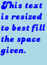 |
{kind=link}
-size" of the image generated. IM
fitted the text and word wrapping so as to try and best fill the image size
specified.
This is extremely useful for fitting an unknown bit of text into a given space,
without it overflowing the area bounds. However internally it is equivalent to
running caption multiple times as IM searches for the right point size to use
to best fill the given space. In other words it can often be 10 times or more
slower than if you supplied a specific "-pointsize" to use.
Captions with Paragraphs
The "caption:" image operator (as of IM v6.2.5) understands the
use of the '\n' shell escape (and thus you need to double
backslash '\\' to escape backslashes), as meaning a new line or
paragraph. Before this version separate paragraphs would have to be processed
by separate "caption:" operations.
magick -background lightblue -fill blue \
-font Ravie -pointsize 24 -size 360x \
caption:"Here I use caption to wordwrap.\nTwo separate lines." \
caption_multi_line.gif
|
{kind=link}
@' filename prefix, just
as as we can with "label:".
mesgs FilePrivate |\
magick -background lightblue -fill blue -pointsize 12 \
-size 320x caption:@- caption_file.gif
|
label:" will not
word wrap the lines, but preserve them.
If you really want a file to be treated as a single paragraph, then you will
need to replace the newline characters with a space character, so your text is
all on one line. For example, here we take the same text, but replace the line
feeds with spaces, then replace any multiple spaces between the words, with a
single space...
mesgs FilePrivate | tr '\012' ' ' | sed 's/ */ /g' |\
magick -background lightblue -fill blue -pointsize 12 \
-size 320x caption:@- caption_one_line.gif
|
sed" command to magick such text
into the format needed by "caption:". In this case the text is
the first page of the "magick" manpage.
man magick | col -b | expand | \
sed '/^$/d; :loop y/\n/ /; N; /\n$/! b loop; s/ */ /g; s/^ //' |\
head -n 7 | magick -size 400x caption:@- caption_manual.gif
|
{kind=link}
| There is no 'justified' text option to caption. But the pango: text formatter (using an external library), does have that feature, and a lot more. |
Text Attributes
Orignal the settings that effect text handling included: "-font", "-fill", "-pointsize", "-size", and "-gravity". We have already
introduced many of these attribute controls above. But there are other
attribute controls that are not used as often, and originally did not effect
"label:" or "caption:" text image generation.
As of IM v6.3.2 you can also use the "-stroke", "-strokewidth", and "-undercolor".
"label:" or "caption:".
For example here I make use of a lot of different settings to control the
attributes of the IM text image rendering...
|
![[IM Output]](label_color.gif)
|
At this time, you can not use tiling images defined using "-tile", "-fill", "-background", and "-origin", with either
"label:" or "caption:". Only solid colors can be
used. Attempting to so will just produce an undefined (black) color.
|
Pointsize, Density and the Actual Font Size
Pixels are dots on the display or in an image, and that is what IM works in. On the other hand, images are printed at a specific resolution (specified as 'dots per inch' (dpi) or pixels per inch (ppi)). As such an images resolution effects how other programs will size an image onto a specific media. EG: It effects the images physical size in the real world. The resolution (density or dpi) of an image is irrelevant to the pixel size of an image, and the amount of space an image takes in memory or on disk. It is also, in general, irrelevant to most IM image operations. As such, to ImageMagick, the resolution is just a set of numbers stored with the image, and is normally ignored. The only time the resolution or density of an image becomes relevant is for fonts and for converting vector formats like postscript, pdf, MWF, to the raster image formats IM handles. The "-density" setting
tells IM how many pixels (dots) per inch (ppi) is present on the output
device, which it can then use to adjust the image generation and font sizes to
match.
For example by default IM works with a "-density" setting of 72 ppi, which
is a typical setting for displaying images on a monitor or webpage. As a
fonts size is specified in 'points' (using "-pointsize" and by definition 1
point is 1/72 inches, then a 72 point font should produce text sized to be
roughly 1 inch high...
|
![[IM Output]](pointsize.gif)
|
However most modern displays have a better resolution than this, typically
somewhere between 90 to 120 pixels per inch (ppi). As such...
|
![[IM Output]](density.gif)
|
-pointsize" actually means the line separation of a font
(actually its drawing area height), and does NOT refer to the actual height of
the drawn letters! As such one font can appear larger or smaller than another
font, at the same pointsize and density. Only the line spacing of the fonts
will actually be the same, anything else is dependant on the font and the
font's designer.
As such with a default "-density" of 72dpi (at which 1 point = 1 pixel) a 12 point font
should have 12 pixels separation between the baselines to two lines of text.
Note that the height of a generated "label:" image is based on the images drawing area or bounding
box, which is often, the fonts line spacing and pointsize. This is not
always the case, as such just appending lines of text vertically is actually
incorrect font handling!
|
-pointsize" and "-density".
Doubling a fonts pointsize ("-pointsize 24") will also produce a
font that looks about the same size as one with doubled density or resolution.
However because a font is designed to look a particular way, the thickness of
lines in a font may not change much at a larger point size. That is the
larger font size is slightly different.
But if you just double the density ("-density 144"), a 12 point
font will be drawn with its dimensions doubled, should still look like the
original 12 point font, just drawn at a larger scale with better smoothing of
the edges.
However at very low resolutions the physical size limitations of the pixels
may also effect the look of a font. This means thin lines may be thickened at
lower densities due to the large pixel size the density is defining. The
relationship between 'density' and 'pointsize' is all a very complex issue,
and one that only a professional font graphic designer can understand fully,
and design their fonts to handle correctly.
According to Lithium from the
IM Forums...
I think it is a feature of TrueType font renderer. TrueType glyph is not only a set of curves, it may contain multiple levels of detail and instructions that adjust point coordinates according to output size in pixels, which is more visible for small size in pixels. Because of that, small text looks different (and more clear, one can notice) than shrunk large text.
FUTURE Example: difference between font at same 'pixel' size, but
different density and point size.
Basically increasing one of these factors while decreasing the other by the
same amount may not produce the same result. Particularly with regard
to line thickness and overall 'style' of the font. You are better off
adjusting the right factor for what you are doing. Use "-density" when scaling a font
for an output device, or later resizing of the font, and use "-pointsize" for normal font
size changes.
If you would like to know more about fonts, then have a look at the document
TrueType
Fundamentals (PDF), which I found very interesting.
Label Image Bounds
When using some exotic fonts, the font may use extended characters, and in the past IM had lots of trouble creating labels for these fonts. That is the text overflows the provided canvas. For example here are two capital letters in a 'LokiCola' font
reminiscent of a certain famous softdrink.
|
![[IM Output]](label_overflow_font.gif)
|
Before IM v6.3.2, "label:" would have
chopped of the 'H' lead-in and parts of the tails from both characters, in
the above example.
|
Unicode or UTF8 Format Text
This method of supplying string arguments to IM is very important as it allows you to do things which ordinarily could be very difficult to do from the command line. Specifically handling 'unicode text', or selecting specific characters using character codes. Now if you can type unicode characters into commands or scripts you can use them directly..
magick -background lightblue -fill blue -pointsize 32 \
label:' é è à ù ç Ö ÿ ‘ ’ “ ” ° ² ³ € x ÷ ' label_i8n.gif
|
@filename'. For example
here I create a Chinese label from a UTF-8
encoded Chinese text file (without a final newline in the file).
magick -background lightblue -fill blue -pointsize 48 \
-font ZenKaiUni label:@chinese_words.utf8 label_utf8.gif
|
The font used in the above example is a special one, with the full set of
Chinese Glyphs defined, such as the fedora linux fonts 'SimSun'
(or in the font file "gkai00mp.ttf"), "ZenKaiUni"
(in the file "ukai.ttf") or "ShanHeiSunUni" (in
any of the files "uming.ttf" or "zysong.ttf" or
"bsmi00lp.ttf").
Note that the windows font 'Mincho' (used in a later example)
also defines many of the Chienese Glyphs but incompletely. If you use it
with the above you will get some question marks for undefined glyphs.
The special script "imagick_type_gen" was used to find, extract the fonts proper
name, and add the font into an ImageMagick "type.xml"
configuration file.
|
printf" program (on linux systems) to magick unicode
numbers to the specific UTF-8 encoded string, in this case proper typeset
opening and closing quotes (again no final newline in the UTF-8 input).
Here for example I generate the UTF-8 text using unicode character codes, and
feed it using a command pipeline (read from 'stdin' using "@-"),
rather than from an actual file.
env LC_CTYPE=en_AU.utf8 \
printf "\u2018single\u2019 - \u201Cdouble\u201D" | \
magick -background lightblue -fill blue -pointsize 36 \
label:@- label_quotes.gif
|
{kind=link}
printf" to output an UTF-8 encoded character string from unicode
character codes.
perl -e 'binmode(STDOUT, ":utf8"); \
print "\x{201C}Unicode \x{2018}\x{263A}\x{2019} Please\x{201D}";' |\
magick -background lightblue -fill blue -pointsize 36 \
label:@- label_unifun.gif
|
graphics_utf" shell script I wrote to generate a 'block' of
unicode characters as UTF-8 text.
graphics_utf -N 2701 2718 |\
magick -font Mincho -pointsize 32 label:@- label_dingbats.gif
|
{kind=link}
Mincho' font. More
specifically the symbol that was part of the original 'dingbat' font is
present in unicode, but using another unicode character code, than the
expected dingbat code. See Dingbats Unicode
Specification Chart for more detail, and its referal to the correct
unicode character to use for the 'missing' dingbat characters.
Rather than a question mark, many fonts would just print a box or a blank
character for such undefined characters. If you see too many such characters,
or missing characters in your output, you probably should be using a different
font.
Other symbol sets also available as part of the enormous unicode character
font include: Tolkan runic symbols, mathematical symbols, roman numerals,
arrows, Braile and technical symbols. It is a large set to explore, and the
"graphics_utf"
shell script can help you explore it.
Here is another example of unicode characters which the Microsoft 'Mincho'
font can render. In this case from the "Miscellaneous Symbols"
section...
Using unicode within DOS scripts is must harder than under UNIX and LINUX.
Special notes on using unicode from that environment has been provided by
Wolfgang Hugemann, in Windows
Character Encoding.
{kind=link}
Symbol Fonts
More commonly used by people looking for special text images, are special 'symbol fonts'. These are much smaller than the full large Unicode font, as they replace only the normal standard ASCII characters (letters and numbers) with a different set of specific shapes and images, though sometimes (rarely) they also have more symbols in the Latin meta-characters area. The 'DingBat' font symbols started out in this way, but as mentioned above they are now part of the Unicode character set. For example, one symbol I rather like to use comes from the font "WebDings". It is a rather nice 'curvy heart' symbol, which is replaces the normal 'Y' character in that fonts defintion...
magick -size 20x20 -gravity center -font WebDings label:Y label_heart_20.gif magick -size 40x40 -gravity center -font WebDings label:Y label_heart_40.gif magick -size 60x60 -gravity center -font WebDings label:Y label_heart_60.gif magick -size 80x80 -gravity center -font WebDings label:Y label_heart_80.gif |
{kind=link} The important thing to remember is that all truetype fonts are actually
a special type of Vector Image Format. With
multiple images (one for each character) in the font. As they are vector
images, it means the font should allow you 'draw' a character, shape or symbol
at any just about any size (scale), using the controls provided by "
The important thing to remember is that all truetype fonts are actually
a special type of Vector Image Format. With
multiple images (one for each character) in the font. As they are vector
images, it means the font should allow you 'draw' a character, shape or symbol
at any just about any size (scale), using the controls provided by "-size", "-pointsize", and "-density".
As you can see above, the 'curvy heart' can be 'rendered' at pretty much any
size I desire.
Some fonts are very specialized. For example you can get a font file from IDAutomation called
"IDAutomationHC39M.ttf" that can be used to generate barcodes.
For example...
|
![[IM Output]](label_barcode.gif)
|
magick -pointsize 48 -font WebDings label:' " _ ~ ) - ' label_webdings.gif magick -pointsize 48 -font LittleGidding label:' x o w ' label_ltgidding.gif magick -pointsize 48 -font WingDings2 label:'ab' label_wingdings2.gif magick -pointsize 48 -font Zymbols label:' ? , - I Z ' label_zymbols.gif magick -pointsize 48 -font TattoEF label:' B Y D I H ' label_tatooef.gif magick -pointsize 48 -font SoundFX label:' V 3 t f 9 ' label_soundfx.gif |
{kind=link} 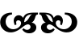
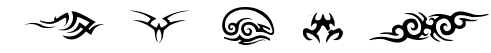
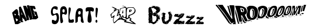
This is only a small sample of what is available. Huge libraries of just
about every symbol, shape, or image, imaginable is available on the
WWW for you to browse and download.
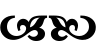
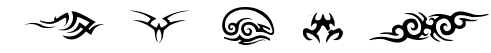
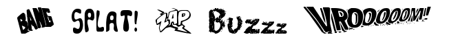
This is only a small sample of what is available. Huge libraries of just
about every symbol, shape, or image, imaginable is available on the
WWW for you to browse and download.
{kind=link}
{kind=link}
{kind=link}
{kind=link}
| Remember that each drawn character has two separate parts that can be drawn: the 'filled' area (which I showed above), and the 'stroke' or outline, which can look very different to the filled area. Each of these areas can be drawn separately, or in different colors, so it may be a good idea to examine a promising symbol or shape more closely, in a number of ways. You may get a very surprising result. See Compound Fonts, Stroke for some examples of doing this. |
| Many creators of symbol fonts generate the shapes using a simple scanner and bitmap to vector converter, without any proper design or cleaning of the image or shape. Caution is recommended when looking at such 'scanned' fonts. The last font shown above is one such example of a 'scanned' font, giving it a poor looking 'dotty' quality, when compared to the other more properly designed fonts. |
Inter-character Kerning
As of IM v6.4.7-8 you can use "-kerning" to insert extra inter-character space between each
letter in text strings. For example
|
![[IM Output]](label_kerning_0.gif)
![[IM Output]](label_kerning_1.gif)
![[IM Output]](label_kerning_2.gif)
![[IM Output]](label_kerning_5.gif)
![[IM Output]](label_kerning-1.gif)
|
-kerning" value see the Joined Compound Font example.
Inter-Word Spacing
Also as of IM v 6.4.8-0 the option "-interword-spacing"
can be used to modify the size of a space character used between words. For
example
|
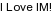
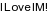
![[IM Output]](label_wspace_10.gif) 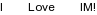
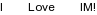
|
{kind=link}
{kind=link}
{kind=link}
|
![[IM Output]](label_wsize_of.gif) 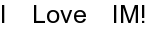
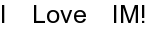
![[IM Output]](label_wsize_50.gif)
|
{kind=link}
-interword-spacing"
the 'space' character size no longer changes with the rest of the text size.
Thus as IM trys to work out the best "-pointsize" the amount of
space between each word is fixed, and thus play no part in the fitting of the
text into the given fixed width. As a consequence the larger the "-interword-spacing"
the smaller sized font that is needed to actually to fit the line of text into
the same specified image width.
A negative value can be used, and can in fact to make words overlap, or
produce unusual effects using specific characters and fonts. But make it too
negative and undefined behaviours can creep in. Caution is advised if you try
this.
While the above is not an example of text justification (though it looks like
it), you can use these options as a starting point to providing proper text
justification.
If you really need that level of text formating and justification, then you
may be better off looking at other methods of generating pre-formated text or
Postscript, such as the command line basied "TeX"
or "LaTeX" software. Better still you could use SVG (rsvg library version), or Pango Markup
Language (see below), to generate justified text.
Inter-Line Spacing
As of IM v6.5.5-8 an another option was added "-interline-spacing".
This was heavilly requested by users in light of the previous settings, and in
many ways is much more useful.
Basically it will add or subtract this many pixels between the individual
lines of text. That is you can use it to expand or squash together the
individual lines of text.
For example....
magick label:'First\nSecond' label_lspace_off.gif magick -interline-spacing 5 label:'First\nSecond' label_lspace_5.gif magick -interline-spacing 10 label:'First\nSecond' label_lspace_10.gif magick -interline-spacing 20 label:'First\nSecond' label_lspace_20.gif magick -interline-spacing -5 label:'First\nSecond' label_lspace-5.gif magick -interline-spacing -10 label:'First\nSecond' label_lspace-10.gif |
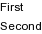
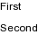
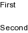
{kind=link}
{kind=link}
{kind=link}
-pointsize", which with the
current resolution or "-density" setting defines the line spaceing of a font. It does
not actually define the fonts actual height or line thickness, though it
effects these aspects of a particular font.
So taking a "-density"
of '72' dots per inch, and knowning that by defintion there are
72 'points' per inch. you can calculate that a 12 point font will have a line
spacing of 12 pixels.
With that information you can 'double-space' your 12 point text lines by using
a setting of "-interline-spacing 12". This will add 12 extra
pixels between lines.
| 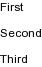 |
{kind=link}
-size" is provided without
a "-pointsize"
setting.
| 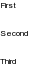 |
{kind=link}
| 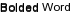 |
{kind=link}
Special Escape Characters in Text Arguments
We have already introduced the special escape characters used in various text arguments, above. Specifically you can escape special characters like newlines using backslash '\', or you can insert extra information
into the string using percent '%' escapes, as defined on the Image Properties
page.
Also there is a special '@' escape that if used at the start
of a line will use the rest of the text argument as a filename to read the
data from the file specified (or STDIN in '-' is used).
Some system (like ubuntu) disable the use of the '@{file}' escape using
security policy. Type magick -list policy to see what
policies and where they are set from are present on your system.
|
-format", for use by the
"magick identify" (as well as "-identify" and the "info:"), but they also effect "label:", and "caption:" text to image generators, and control the image
meta-data setting options "-label", "-comment", "-caption". And finally they are also used by "-annotate".
While backslash '\' is used by the "-draw" 'text'
method, the percent '%' escapes are not as it
interferes with ImageMagick's SVG image handling. This was one of the
reasons the "-annotate" operator was created for IM version 6.
|
@'
escape).
This means you do not need to worry about escaping 'escapes' for text file
data, but it also means you have to process file data yourself outside of IM
if you need to insert information into the text.
| Protecting input text file from escape handling was finalised in IM version 6.3.3. |
info.txt" file contains the string
,
(no final newline).
|
|
@' file read escape. This is
important as it means that any time IM reads text from a file, it will
never handle any special characters that was present in that file.
IM reads text files, as literal text, without any escapes
Unfortunately this also includes any final newline that may be present in the
file (or stream) that is being read! This can result in an extra 'blank' line
in the resulting image, when the input text has a newline on the end (a very
common practice). For example...
|
![[IM Output]](label_stdin.gif)
|
echo" command
added on the end.
If you don't want that final newline, you will need to remove it yourself.
This however could be a tricky matter, depending on where and how the text is
sourced or created, and what API, you are running IM from.
The best way is to try not to generate that final newline to begin with. For
example using a '-n' flag to "echo".
|
![[IM Output]](label_stdin_2.gif)
|
|
![[IM Output]](label_stdin_3.gif)
|
|
![[IM Output]](label_stdin_4.gif)
|
User defined option escapes
A major problem is trying to use escaped information from one image, in some other image, such as when generating a separate "label:", or "caption:" image.
This is a very difficult problem, and the current solution, (for a single
image) is to create a special 'user option', that is attached to an image
being processed. This 'setting' can then be looked up by the "label:", "caption:", or "-annotate", as a percent escape sequence, when needed.
For example here I create a completely new label image using information from
the built-in rose image. That information source image is then deleted, though
I could just as easily append the new label to the original image.
|
![[IM Output]](label_escape.gif)
|
Escaping Escapes
If you must feed a string as an argument to IM (especially as an API call), but don't want IM to expand escapes, you can simply 'escape' all three escapes using an extra backslash '\'.
Note the '@' only needs to be 'escaped' if it is the first
character, and for backward compatibility, percent escapes can also be escaped
by doubling it. That is '%%' will produce a single percent.
For example...
|
![[IM Output]](label_escapes.gif)
|
Before IM version 6.3.2, you could not use a backslash to escape an
initial '@' to turn off the 'read from a file' function. In
that case the only way to escape an initial '@' was to read
it from a file. This was not very practical in API's.
|
-annotate"...
|
![[IM Output]](annotate_escapes.gif)
|
@' escape), will always be treated as literal, without any
special meaning. This avoids the need for any pre-processing of the text,
just watch out for any final newlines.
|
![[IM Output]](annotate_escapes_file.gif)
|
Escapes on Older versions of IM
The above definitions were only finalised in IM version 6.3.3. Before this escapes were sometimes handled in some options, and sometimes not, according to any requests, problems, and complaints, sent by IM users. This was especially the case with regards to the percent escapes with "label:" and "caption:", which was for a period deemed as 'non-sensible'.
For example whether you see a '%c' in the following label image
is very version dependant (at least before IM v6.3.3).
|
![[IM Output]](label_percent.gif)
|
abde' (percent escape applied) or
'ab%cde' (percent not applied) depends on exactly what version
of IM you are using.
IM v6.2.4, percent escapes were removed from "label:" and "caption:" as being non-sensible.
However they returned in IM v6.3.2, as a new '%[fx:...]
construct, which can reference any image, made percent escapes in text to
image generators useful again. See FX
Expression Escapes.
|
|
{kind=link}
Pango - Basic Formatted Text
The "pango:" text coder (fully working as of IM v6.7.6-3) works
in much the same way as the Label and Caption coders. It provides a limited text formatting language on
systems in which "Pango" is installed. On Linux and MacOSX systems pango is
standard, on Windows it is optional.
Here is a simple example without using any special pango formatting...
|
![[IM Output]](pango.gif)
|
-background" color, you can
not set the default fill, or undercolor, nor the specific font to use. This is
because these attributes are selectable via the Pango Markup Language instead
(see below).
It is recommended that you use "-size" to define width and height limits to the output image, to
which pango will automatically word wrap (or character wrap, for chinese) the
input text.
| 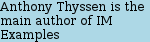 |
{kind=link}
pango:justify"...
|
![[IM Output]](pango_justify.gif)
|
| 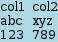 |
{kind=link}
Note that while the "printf" command above can generate tab
characters, using the '\t' escape, IM does not understand the
use of such an escape. It does however understand the '\n'
escape sequence in strings.
|
Pango Markup language
The real power of pango however is in the "Pango Markup" language, which is enabled by default. You can turn off pango markup using "-define
pango:markup=false", but then you may as well be using Caption instead.
The "Pango Markup" is much like HTML, in that you use a set of
"<...>" markup tags hidden in the text, and which is used
to control how the text is to be formatted.
Here are some guides on the Markup Language (without the API junk)
- The Pango Markup Language
- Pango Text Attribute Markup Language (from Gnome)
- Pango Text Attribute Markup Language (From GTK)
- Pango Script Gallery (examples)
|
![[IM Output]](pango_formatting.gif)
|
<span ... >" tag is the main tag to use in pango mark
up. It allows you to control the exact size, color, and position of the
contained text. For example..
|
{kind=link}
size="49152"" in the above example, means a text
pointsize of 48 points. While the negative rise ("rise="-20480")
means to lower the text position by 20 points (or pixels at 72dpi).
But instead of specifing a pointsize for the text I can also use a special
size label such as "size="x-large"". See the source code of the
next example.
Watch out for the quotes within quotes in the above. The quotes within the
tags are required. However newlines and extra space within tags will take no
part in the formatting of the text. As such hiding extra newlines in a markup
tags, or in a markup comment "<!-- ... -->",
can be very useful. Again see the source text of the next example.
As a final example of the power of pango formatting here I use it to format
a pre-prepared file "pango_test.txt". This contains most of the common pango markup
tags you are likely to use. Compare this markup file to the resulting image
below.
magick -gravity center pango:@pango_test.txt pango_test.png |
{kind=link}
Pango Notes and Problems
- Gravity
- I have not been able to get pango to selectively center just a single
line of text. You can only center everything, or nothing via the
"
-gravity" setting. The reason for this appears to be because pango is designed to generate separate text labels for applications. That is titles are usually generated separately to the main body of displayed text. Pango is is not meant to be a whole scale text page formatting engine. - Fonts
- Pango can change fonts in the middle of rendering. It already does so easily for bold and italic text. However the font specification is from GTK, and as such uses a different system to ImageMagick in general. You can find out more about fonts using GTK, by running the "gtk-demo" program, and double clicking "Pickers" and the "Text Widget".
- Defines
- There are lots of special Defines that
can be used to globally control various aspects of pango text formatting.
These are currently listed on the Pseudo File
Formats, though I have not explored all of them myself.
These are the ones I have used...
-define pango:markup=false- Turn off the markup language tags. Any tags are then included in the output. No pango formatting within the text is possible. this is especially useful in debugging, letting you see exactly what pango sees for its input.
-define pango:justify=true- Justify text across the width of the image size. That is add extra intra-word spacing so both left and right edges of a block of text lines up.
More Information on Pango
To see just what is posible see Pango Script Gallery If you do something interesting with pango, please contribute. Either mail me (Address in page footer), or post it on the IM Discussion Forum.
On systems with pango installed you can also use the command
"pango-view" for generate pango formated images.
However its default 'density' or 'dpi' setting is your display
(IM uses 72 dpi by default) and as such may vary from host to host.
|
Text - Pages of Plain Text
The "text:" input format is designed to magick plain text into
images consisting one image per page of text. It is the 'paged text' input
operator of ImageMagick.
In other words its purpose is to magick the larger preformatted text files into
pages in much the same way that printers print plain text onto separate pieces
of paper.
Do not confuse the "text:" file input format with the
similar "txt:" input format.
The latter will first attempt to read the file as a 'IM pixel
enumeration' image format.
That doesn't mean that a plain text file with a ".txt" will
fail. In fact such a file will probably be converted as you would expect,
as the "txt:" file format will
automatically fall back to the "text:" format if an enumerated
image is not recognised.
|
text:" will handle just about any text file,
without modifying the final image size produced, or word-wrapping very long
lines. You also do not need to pre-process and special characters as you
would if you used the text on the command line. Finally and more
importantly if a fixed width font (like Courier) is used, files with spaced
out columns of data, will still have that data in spaced out columns.
Basically "text:" will magick the input file 'AS IS'.
The input text data read from the file is essentially passed directly to the
font library to draw the UTF text. As a consequence of this some control
characters may be drawn using unusual 'glyphs'. This includes
TAB and FORMFEED characters, which, at the time of
writing, the 'freetype' library gets wrong.
If this is a concern, you may like to pre-process your text file using a
filter program, such as "expand", to magick TAB
characters into the appropriate number of spaces.
|
-page" )at the current resolution (set with "-density"). By default (at 72
dpi) this will be '612x792' pixels in size, which for most
purposes is very large.
For example here is a direct conversion of the plain text formatted manual for
the "magick" command, into an image (it is large so to see it
select the 'page' image on the right to see it)...
|
![[IM Output]](text_manpage.gif)
|
The above manual to image conversion however generates multiple pages
(images), so I Deleted the second and
later ones to leave me with just the first page, instead of a GIF
animation of all the pages.
I could also have appended a Read
Modifier, '[0]' input filename, such as
"text:-'[0]'", to tell IM only to read the first image
generated. Though at this time all the page selection is still handled by
generating all pages and deleting the unwanted pages.
|
CourierNew' in the above
so as to preserve the character spaced formatting that is present in the
printed page.
Note how this output varies from that of caption:
above. The overall look of this image can also be improved by using the same
techniques given in Postscript section next.
If you just want to know how big say a 'A5' page is at 100 dpi, then this
command generates a single blank page, of that size and returns its size in
pixels. The filename, "/dev/null", is a special UNIX file that
is always empty.
|
![[IM Text]](page_size.txt.gif)
|
Trimming Text Pages
Because the text is being 'drawn' onto a large canvas, you will likely want to remove all the unused space produced. This can be done by using the image operations "-trim",
"+repage", then to make
it look reasonable, re-adding some edge space using "-border". Of course you will
also need to match the "-background" color you used as the "-bordercolor" you are
re-adding.
Sounds complex? It isn't really, for example...
echo " Hello Cruel World " |\
magick -background lightblue -fill blue -pointsize 18 \
text:- -trim +repage -bordercolor lightblue -border 3 \
text_trimmed.gif
|
-trim" is used to remove the vast amount of extra white space in
the "text:" page image. This however will also remove any leading
spaces in front of a line!
There is however an interesting technique which will allow you to "-trim" the image down to the size
of the actual text drawn onto the page, including any leading and trailing
spaces in the input. This uses a special "-undercolor" setting (looked
at in detail later).
echo " Hello Cruel World " |\
magick -background white -undercolor lightblue -fill blue \
-pointsize 18 text:- -trim +repage \
-bordercolor white -border 3 text_boxed.gif
|
{kind=link}
echo " Hello Cruel World " |\
magick -background none -undercolor lightblue -fill blue \
-pointsize 18 text:- -trim +repage \
-bordercolor lightblue -border 3 \
-background lightblue -flatten text_box_trimmed.gif
|
-border" is actually almost exactly
what IM now produces using a "label:" and
reading from a '@' escaped filename. However "label:" does it in a faster, and far cleaner way
(via the "freetype" library rather than a postscript conversion).
You can specify a smaller "-page" size, either in pixels (see next example), or using a media
page size (such as 'A5'), using the "-density" or pixel resolution
setting. You can also specify the offset at which to start drawing the text
on the page, relative to the top left corner. For example...
echo "This is a long line that shows that 'text:' does not word wrap." |\
magick -background lightblue -pointsize 18 \
-fill blue -page 320x95+50+10 text:-'[0]' +repage text_page.gif
|
Almost all other image creation operators use the "-page" setting to set a larger
virtual 'canvas' and an 'offset' for the image on that canvas, generally for
the purpose of layering images or generating animations. Because of this it
is probably a good idea to reset your page setting using "+page" after any
"text:" or "ps:" operation, or you may get
unexpected results for any secondary images you may latter read in on the
same command line.
This also is why I added a "+repage" operator to the above example otherwise the text is
offset, and the image generated is also offset!
For more details of using this offset see Page
Image Attributes.
|
text:" will generate multiple pages and thus
multiple images, one for each page generated by the postscript
translation of the text file.
If you are only interesting in the first page of text, or just want to avoid
the possibility of multiple images, add a '[0]' to the
"text:" filename, to tell IM to only read the first page
generated after the text has been converted to images (see previous
example).
Postscript/PDF - Pre-formatted Text and Graphics Input
(or other vector image formats)
The following gives a standard vector image handling technique that can not
only be used for "PS:" (postscript) images but all other images
handled using vector graphics. This includes image formats such as:
"PDF:" (portable document format), "TEXT:" (paged plain text), and even "SVG:" (scaled vector graphic) and "WMF:".
This method can be expanded to give you a very fine control of exactly how the
text will look as an image. For example with the right 'text to postscript'
filter, you can control the word wrapping, justifications, multiple font
handling, bolding, borders, titles, filenames, dates, and other fluff in the
postscript image.
However as this section is about text to image, it means you need to first
magick your text to a formatted postscript file. There are lots of external
programs that can be used to do this. For example "a2ps",
"enscript" or "pstext".
Essentially you can use a word processor (like 'OpenOffice' or
'Word', or even 'Notepad'), OR if you want a batch
text processing system you could use at 'TeX' and
'LaTeX' to generate your pre-formatted text (see A Complete Text Processing System below). These programs are all
designed to handle the complexity of mixing plain, bold, different size, and
font text together, along with word-wrapping, justification and paragraphing
controls. The output from these programs can then be passed to IM to convert
it to an image of the size and quality you desire.
So lets first generate some postscript (converting text from a personal fortune
program).
|
|
text:" examples above) to remove the excess blank areas from the
default page/canvas generated.
magick ps_version.ps'[0]' \
-trim +repage -bordercolor white -border 3 ps_version_raw.gif
|
[0]' to limit the input to just the first page.
If your postscript image generates multiple pages, it will still be completely
processed by the "ghostscript" delegate, but IM will only read
the first image returned, rather than generate multiple images, one image per
page. If you postscript is very large, you may like to use other postscript
utilities to limit the number of pages before processing it with IM and
"ghostscript".
As you can see postscript converted to the default "-density" of 72 dpi, often does
not look as good as it should, with only a minimal amount of anti-aliasing.
This is particularly the case when dealing with postscript fonts, which are
not designed to work at these low-resolutions.
To improve this, you can use a Super
Sampling technique to generate a better image. In this case you ask
"ghostscript" draw the page at a higher resolution (or image
"-density"). You can
then "-resample" (a specalized resize) to bring this larger image
back to a more 'normal' screen resolution density.
magick -density 196 ps_version.ps'[0]' -resample 72 \
-trim +repage -bordercolor white -border 3 ps_version.gif
|
196' is 3 times the final 72dpi, which means when
"-resample" is used
approximately 3×3 pixels are merged down into each pixel. This produces
better anti-aliasing pixels along the edges of the text improving the overall
look of the result.
Also note that using a larger density or resolution is not quite the same as
just enlarging a font. The font definitions could have adjustments for
handling low resolution situations. For example compare the hole in the
letter 'e' in the two images. The original version is sharper
due to special handling within the font, even though over all the latter super
sampled version is clearer. For more information see Resolution, Pointsize, and Actual Font Size below.
You don't have to use the values above, as sometimes slightly different value
may produce a better or more desirable result.
Of course having "ghostscript" generate an image 2, 3, or even 4
times larger also means IM will take 4, 9 or 16 times longer to generate the
image! It will also use that much more memory and temporary disk space! But
the results are generally worth it. The best idea is to just try it out for
your own document, and see what gives you the best results.
Also if you need more anti-aliasing, rather than using an even larger input
resolution, you could try blurring the image by a sub-pixel amount (say
'-blur 0x0.7') before you reduce its size. I have also sometimes
found that a very small amount of unsharpening after the resize (a common
photoshop technqiue), can improve the overall final result.
magick -density 196 ps_version.ps'[0]' \
-blur 0x0.7 -resample 72 -unsharp 0x0.7 \
-trim +repage -bordercolor white -border 3 ps_unsharp.gif
|
{kind=link}
If you like to have a transparent background instead of white, you can specify a "
-channel" setting of
'RGBA', to include the alpha channel in the image. Of course you
will need to use an image format that can handle semi-transparent colors.
magick -channel RGBA -density 196 ps_version.ps'[0]' -resample 72 \
-trim +repage -bordercolor none -border 3 ps_transparent.png
|
magick ps_transparent.png -background skyblue -flatten ps_bgnd_color.gif |
{kind=link}
magick composite -tile bg.gif ps_transparent.png -compose DstOver \
ps_bgnd_tiled.gif
|
{kind=link}
Multiply' alpha
composition, to overlay the 'white background' image, onto the desired 'paper'
background.
magick composite -tile bg.gif ps_version.gif -compose Multiply ps_multiply.gif |
BumpMap' compose method. This will
grey-scale the source overlay image, before it uses uses multiply to composite
the images together.
You can also generate the grey-scale image equivalent of an overhead
transparency slide. This basically uses the opaque, white background image
(from above) as a 'mask' which to set shaped transparent image using the Alpha Shape Operator
magick ps_version.gif -negate -background black -alpha shape ps_overhead.png |
text:" converter above, the
"ps:" converter also makes use of the "-page" setting to set the canvas
size of the image 'media' onto which the page is drawn. Though offset supplied
will be ignored. However as most postscript files define the drawing media
size internally, this is usually not necessary.
Most other image creation operators use the "-page" setting to set a 'virtual
canvas' and an ofset on that virtual canvas (for example to generate GIF
animations). As such it is probably a good idea to reset it using "+page" after using it for
a "text:" or "ps:" image read operation, otherwise
you may get unexpected results with the later images.
For more details of using this offset see Page
Image Attributes.
|
{kind=link}
a2ps", then IM was used to magick this to an image. Onto this
image other pre-prepared line drawings of the same mathematical object was
added to the page. This final image (saved in 'targa' or TGA format) was then
passed to the "PovRay"
ray-tracer for inclusion in the final image or ray traced scene.
Using GhostScript Directly
While this not strictly IM, Richard Bollinger has reported that running the "ghostscript" delegate directly is much more efficient,
producing an order of magnitude faster processing due to less file handling,
by IM.
For example instead of running...
magick -density 300x300 -compress Group4 file.ps file.tif |
gs -dBATCH -dNOPAUSE -sDEVICE=tiffg4 -r300x300 \
-sOutputFile=file.tif file.ps
|
ghostscript" can not resize images, (other than adjust
the output density or resolution) and will probably not be able to output the
image in the image file format you require, or at the quality you want. But
you can always then feed the GhostScript output to ImageMagick to finish the
task.
That is especially the case if you want to super-sample the results (higher
resolution input, to resized smaller output).
GhostScript can be a difficult program to figure out how to use, or fix for
specific types of postscript. Cristy constantly battles with these issues on
behalf of IM users, and in this he has done a super effort. Unfortunately in
dealing with the many things that can (and does) happen, IM can not provide a
simplified method for postscript/PDF via GhostScript.
Draw - Draw Text on Existing Canvas
By using the low level "-draw" operator to draw the font we get a lot more control,
especially as to the exact position of the font, and the size of the image it
is drawn into.
magick -size 320x100 xc:lightblue -font Candice -pointsize 72 \
-fill blue -draw "text 25,65 'Anthony'" text_draw.gif
|
{kind=link}
-draw", actually draws
text on an image. Not only can you specify a "-fill" color, but you can also
specify a "-undercolor", as well
as an edge or "-stroke"
color, both of which are turned off by default (set to a color of
'none'.
The "-fill" color can also
be replaced by a "-tile"
image pattern, while the stroke edge width can be changed using "-strokewidth". Then the
relative position of the drawn text can be changed a with "-gravity" setting.
For example here I used many of the extra features I just mentioned.
magick -size 320x100 xc:lightblue -font Candice -pointsize 72 \
-tile bg.gif -undercolor dodgerblue -stroke navy -strokewidth 2 \
-gravity center -draw "text 0,0 'Anthony'" text_options.gif
|
{kind=link}
As of IM version 6.2.4, the "-draw text" operation no longer understands the use of
'\n' as meaning newline, or the use of percent
'%' image information escapes. (See Drawing a Percent Bug).
These abilities, and problems, however remain available in the new IM v6
operator "-annotate". See the Annotate Text
Drawing Operator below.
|
-draw" (MVG - Magick Vector Graphic)
string. However if you set the above option within the draw argument, that
option will only apply to that specific draw MVG string.
On top of this the draw MVG format can do much much more, such a text rotation
and font 'decorating' and of course you can also draw various shapes like
circles onto the image.
For example here we draw underlined, and rotated text, overlaid on a couple of
background circles.
magick -size 320x120 xc:lightblue \
-draw "fill tomato circle 250,30 310,30 \
fill limegreen circle 55,75 15,80 \
font Candice font-size 72 decorate UnderLine \
fill dodgerblue stroke navy stroke-width 2 \
translate 10,110 rotate -15 text 0,0 ' Anthony '" \
draw_mvg.gif
|
-draw" for creating your image, I
suggest you look at the Drawing Examples Page.
Undercolor Box
The "-undercolor"
color setting, as demonstrated above, and later below, will color the defined
drawing area for that character and font. generally it just fits the drawn
character. This is particularly the case the left and right edges of the
drawn font, as the top and bottom edges are usually larger enough to
accommodate all the characters. The drawing area basically represents the
character 'cell' boundaries surrounding the area in which the font is drawn.
The major use of using the "-undercolor" option, is as a simple and quick way to clear a
'noisy' background from around the text. For example look at Annotating on Top Images. However it is
recommended you also add an extra space character at the start and end of the
string being drawn in that case.
Bounding Box Overflow
One of the biggest problems you will probably come across when drawing text, or just generally handling fonts, is that not all fonts obey the normal rules. A font designer can 'draw' individual characters (or 'glyphs') anywhere relative to the current text position (known as the caret). The font position does not even have to move forward, and in some international fonts could even move backward!. The result of this freedom of design is that some 'glyphs' do not fit inside the defined drawing area which the font declares the character fits into, especially on slanted, or script-like fonts where some parts of the letters extend well outside the bounds and into the areas used by later (or previous) characters. The worst font I have seen in this regards is the 'LokiCola'
font, which draws around half of its capital letters with long wavy tails,
well beyond the bounds of the individual character cells. The font basically
assumes each capital letter will be followed by 3 or more lowercase letters.
To show this I'll draw a number of the font's capital letters separately,
allowing you to see just how far the letters could extend beyond the cell
'undercolor' or drawing bounds. I also use a couple of them to form the fonts
name, so you can see just as they were designed to be used, and why they
overflow their bounding boxes.
magick -size 500x200 xc:lightblue \
-font LokiCola -pointsize 72 -undercolor dodgerblue \
-draw "text 15,65 'L'" -draw "text 130,65 'C'" \
-draw "text 245,65 '1'" -draw "text 360,65 'H'" \
-gravity South -draw "text 0,10 'Loki Cola'" draw_undercolor.gif
|
{kind=link}
H' actually overflows on the left side as well
as the right side of its drawing area. This can make it difficult to use at
the beginning of lines.
| Remember this problem is NOT a bug in IM, but caused by the interaction of the font library IM uses, and the settings within the font itself, usually on purpose by the font designer. IM just uses the results as they are programmed in the font, which does not always produce what the user intended. Caution is thus advised with unusual fonts. |
Annotate - Text Drawing Operator
With IM version 6, a new font drawing operator, "-annotate", was made available.
This operator is in may ways much simpler that using a "-draw text" operation, but as it
uses the 'annotate()' API (Application Program Interface), it is
also more powerful.
While the operator does make use of the "-draw" primitives, it does so in a
more complex way, such as expanding special escape
characters to add extra image information and even multiple lines, and
applying a coordinate system transform to the drawn text to produce slants and
rotations.
Because of this, the operator is now the preferred text drawing operator for
all ImageMagick text drawing and image annotation, and this is now reflected
in these example pages.
Here is a basic example using this operator.
magick -size 320x100 xc:lightblue -font Candice -pointsize 72 \
-fill blue -annotate +25+70 'Anthony' annotate.gif
|
-annotate" operator is that it can rotate the X and Y axis of the
drawn text completely separately to each other. This is done by providing the
angle in which to rotate each axis as a 'image size' in the operators
argument.
Just to show how complex a single "-annotate" operation can be, here is a boxed, stroked, and slanted
image...
magick -size 320x100 xc:lightblue -font Candice -pointsize 72 \
-tile bg.gif -undercolor dodgerblue -stroke navy -strokewidth 2 \
-annotate 0x20+20+67 'Anthony' annotate_opts.gif
|
-tile") is also slanted with the
font. That is because it is drawn using a sheared/rotated coordinate system,
which also shears and fill pattern tiled within the drawn text.
Further example of this shearing capability is the Sheared Shadow Font example. Compare that with the Slanted Font created with the equivalent
"-draw" MVG string.
For a table summarizing the effects of the "-annotate" shearing operation,
see Annotate Argument Usage.
For example here is some slightly rotated text ...
magick -size 320x100 xc:lightblue -font Candice -pointsize 72 \
-annotate 350x350+20+90 'Anthony' annotate_rotated.gif
|
Note that the angle given to "-annotate" must be positive for IM to understand it correctly).
The exception to this is if a comma-separated 4 number form of Geometry Argument is used. For example
"-annotate '-10,-10,20,90' 'Anthony'", could have been
used in the last example.
|
|
![[IM Output]](annotated_labels.jpg)
|
rose:" image with information about the images size. To center
the text on the image we use a "-gravity" setting, and turn off any and all rotations and offsets
by using an "-annotate" argument of '0'.
|
![[IM Output]](annotate_rose.gif)
|
Automatically Sized Annotated Text Canvases
Often you need much more control than what "label:" can provide. For example you want to use a tile or
gradient image, requiring you to Annotate the text.
Unfortunately you then need to know in advance the size of the canvas you need
for your Annotated Text.
Here is a typical example of the problem. When I first set up this command I
set my size to the results I wanted, and at first it worked quite well.
But then I got this...
magick -size 480x80 gradient:yellow-green \
-font ArialBkI -pointsize 70 -tile gradient:blue-red \
-annotate +10+65 'Gradient Fun' funfont_gradients.jpg
|
{kind=link}
Gradient' in that above (missing the letter 'i').
Of course when I fixed that spelling, my image size was now wrong, producing
incorrect result shown above.
What we need is to be able to use the "-annotate" operator, but with
the canvas sized to fit the Annotated Text.
One solution is to use a much larger canvas, then "Trim" the background to the right size. I
also added a "Border" to add a
little extra space around the font and the final edge of the image, for a
better look.
magick -size 800x120 xc:black -font Corsiva -pointsize 100 \
-tile tile_disks.jpg -annotate +20+80 'Psychedelic!' \
-trim +repage -bordercolor black -border 10 funfont_groovy.jpg
|
{kind=link}
Canvas
Trim", will not trim a tiled multi-colored background.
The better solution is to create the canvas using "label:", to generate the canvas of the right size. A Draw Color Fill is then used to tile an image over
the canvas (and the label text), and finally we Annotate our text using another tiling image.
magick -font Ravie -pointsize 72 label:'Get Wet!' -border 10 \
-tile tile_aqua.jpg -draw "color 0,0 reset" \
-tile tile_water.jpg -gravity center -annotate +0+0 'Get Wet!' \
autosize_wet.jpg
|
{kind=link}
Note that position of the text in a centered "label:" image may not exactly match the position of a centered
"-annotate"
operation. The two methods follow completely different processing
algorithms, and as such may not match. Especially when unusual fonts are
involved.
|
Auto Sized using 'Undercolor Box'
Rather than using a "label:" image, you can
draw the font on a large canvas using an Undercolor
Box and a large stroke width, before
trimming the canvas to fit.
For example
magick -size 500x100 xc:lightblue -font SheerBeauty -pointsize 72 \
-gravity center -undercolor white -stroke none -strokewidth 3 \
-annotate +0+0 ' Invitation ' -trim +repage -shave 1x1 \
invitation_box.jpg
|
-strokewidth" setting. The
only important requirement is that the initial canvas be a color different to
the background color, ('lightblue' in this case) and is
larger than the final result.
Just a word of warning, some fonts draw characters well outside the individual
character drawing area. (For example see Undercolor
Box above). In this case the above result will work, but may require you
to use a transparent canvas, and then overlay the result over white (using an
operation like "-background white -flatten" for example), to
magick the unused and still transparent areas to white. However that
character will likely be touching an edge of the resulting image. Basically
you can't really win, in all situations, just try your best.
Coloring a Gray-scale Text Image
I purposefully generated the above image as a grey-scale black and white image, as this can be used as a masking template. From a pure image like this you can then color the background and the foreground of image either separately or both at the same time. Here for example I use the Level by Colors Operator, "+level-color", to globally modify the image colors so as to assign
the foreground and background colors with specific values.
|
|
{kind=link}
plasma:") image then becomes
first, and the background in the middle.
For other techniques of coloring a gray-scale image like this, see Using a Mask to Limit the Composed Area. And more
generally Using Masks with Images.
For other methods of generating gradients for tiling see Gradients of Color, Sparse Points of Color, and Randomized Canvases.
Fonts
As for ordering the font paths, that is simply ordering the fonts specified in
the XML files.
The start point is the system fonts, followed by the system installed
"type.xml" file, on my system this is "/etc/ImageMagick-6/type.xml".
This system installed "type.xml" file is typically just a list of 'include'
other type-* files. And the order of the includes will specify the order of
Extra System Fonts, verses Ghostscript Fonts.
After that file other "type.xml" files are looked for, such as in 'home'
directories, or even current directory.
Later fonts will NOT replace earlier fonts, as such if two fonts have that
same name, only the first one will be noted by IM. (a security measure).
To see the fonts loaded use
magick -list font
It lists "Path:" of the type file each font list was found in, but the
paths are listed in REVERSE order, with system fonts at the end.
I have for example a personal Font named "Courier", but it is not listed in
the above list as it was defined after the "Courier" that was found in the
"System Fonts" area, (which is listed at the end of the above output).
On the other hand my own personal font "CourierNew", is listed, as it does not
clash with any system or system config defined font.
To see what font glyph file is selected for soem specific request
use...
magick -debug annotate xc: -font Courier \
-annotate 0 'Test' null: 2>&1 |
grep '^ *Font '
Determining Font Metrics, without using an API
A particular font and its individual characters contain a lot of information.
Such information can be very useful to have, especially if you are wanting to
use IM for piecing together the text of many different fonts.
It is also important to remember that most fonts are proportional fonts,
meaning that each individual character will have a different width, and
a different 'natural' advance of the caret (or origin). As such each specific
'string' of characters will be rendered (drawn) a different length without any
real regard to the actual number of characters used in the string.
The exception to this are 'Fixed-Width' fonts, such as "Courier",
"Typewriter", or "Terminal" fonts, in which all
characters have the same width, allowing you to generate columns of text
easily.
The Debugging Setting "-debug annotate" can be used to
get IM to directly report a TTF font's metrics, for a specific string. For
example...
|
![[IM Text]](font_metrics.txt.gif)
|
The "-debug
annotate" method was added to IM v6.3.9-2
|
Older techniques
This debug output however may not be convenient, or you may have to handle IM's that are older than this version. The following are older examples where the text is actually drawn in various ways and colors, and then information (as integers) extracted from the resulting image. For example lets find out the dimensions of the 'Ravie' font
relative to a fixed baseline, at 72 point.
Here is the image we will be studying, as a reference. You don't actually
need to drawn and save it as an image, as we are only extracting data, not an
image. the colors of this image will be modified so we can look at the white
and black parts separately using "-trim" to extract the metrics used.
|
{kind=link}
None'), so that we can measure find the size
and location of the bounding box or drawing area of this specific character,
for this font. Note that for height information you can just draw anything.
|
| 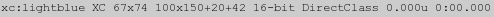 |
Ravie' font at 72
points, will have a total bounding box height of 74 pixels. The top of the box
is 42 pixels from the top of the image, as the baseline which was positioned
at a 100 pixels y coordinate, the box starts is 100 - 42 or 58 pixels above
the baseline. That leaves 74 - 58 or 16 pixels for the bounding box below the
baseline for the descenders.
Note that not all fonts limit their drawing
to within their defined drawing bounding box! However some letters can
extend far outside those boundaries. That is why the above example sets
a "-fill" color of
'none'. That way ill behaved fonts will not effect the above
measurements.
|
A" in this font at this point size, the next character should be
drawn 66 pixels to the right of the starting point (known as the caret). This
is the strings 'logical' length.
That is the 'caret' or start point for the next character should start at 20 +
66, or at '+86+100' (the baseline does not change vertically). Be
warned that some Arabic fonts can in fact draw right to left, so the 'caret'
offset will be negative.
That gives use the font metrics for the character 'A' but what about physical
dimensions of drawn 'A' relative to the 'caret' or start point. Well just
swap the two color settings...
|
![[IM Text]](font_drawn.txt.gif)
|
The dimensions extracted from a font will also vary with the current
"-strokewidth"
used for drawing the font. If you increase the size of the outline
stroke, then the dimensions (and bounding box size) needed to draw the
font is also expanded by the same amount to accommodate the thicker outline.
|
| Dimensions also vary with the operating system, (type and version) and the version of the delegate font drawing library IM is using on that system, even when the exact same font library and IM version has not changed. Caution is recommended when different computers could be used for text drawing, as results can vary even for the same font. |
Creating Lines of Mixed Font Styles
Creating a single line using multiple fonts, point sizes, and styles is not something IM is really designed to do. It gets even worse when you also start to consider things like text justification, word wrapping, and wrapping around images and other things. This is the sort of thing that programs like Word Processors, Web Browsers, Document Printers do very well, usually under user interaction, but few can do so well under program control. One exception to this is "TeX", and its family of programs (see
A Complete Text Processing System below), so if you are
serious about processing text graphically, I suggest you look at this program
family.
Another alternative is to look at various document 'pretty' printing programs
such as a HTML converter. You can use these to magick program generated
documents into postscript which IM can then happily post-process into whatever
image format or style you want.
An API solution (using the C MagickWand API interface) has been created by "El
Supremo" (from the IM discussion forums) in his FontMetrics program. and here is Example
Output of "FontMetrics".
Now while IM command-line is not designed for 'word processing', it does not mean you can't use it for such. It is just more difficult. Here I will give some examples of mixing text in different fonts and styles, to give people a starting point. The simplest solution people usually think of is to just append "
label:" images together...
magick -font LokiCola -pointsize 36 label:'LokiCola ' \
-font Candice -pointsize 24 label:'Candice ' \
-font SheerBeauty -pointsize 48 label:'SheerBeauty' \
+append wp_label_append.jpg
|
magick -size 1x50 xc:none +size \
\( -background white -font LokiCola -pointsize 36 \
label:'LokiCola ' \
-clone 0 +swap -background none -append \) \
\( -background white -font Candice -pointsize 24 \
label:'Candice ' \
-clone 0 +swap -background none -append \) \
\( -background white -font SheerBeauty -pointsize 48 \
label:'SheerBeauty' \
-clone 0 +swap -background none -append \) \
-delete 0 -gravity South -crop 0x50+0+0 +append \
-bordercolor none -border 1 -trim +repage \
-background white -flatten wp_label_bottom.jpg
|
{kind=link}
-trim" and a "-flatten" was used to set the height of the line to the highest
label, and fill in the background.
As you can see this produces a better job, but a small font tends to produce
subscript like behaviour, rather than properly aligned text.
What we really need to do is align all the text strings by their 'baselines'
and that is very difficult without access to more textual information. This
information is easily obtainable under a program API, but much more difficult
from the command line. One method is shown in the previous example section.
However it is possible to align words by their baseline without actually
collecting baseline information. While "label:" text images do not provide any clue as to the images
baseline, you can specifically draw images at a fixed baseline.
Without an API you also can not directly find out how long or high drawn text
is, so you first need to use a canvas that is large enough to ensure that we
don't loose any information about text image. Then to preserve trailing spaces
and text height you also have to make good use of the ("-undercolor") feature
available to text annotation and provide a boundary for image trimming.
So lets see how you can do it from the command line.
magick -size 500x100 xc:none -fill blue -draw 'line 15,0 15,99' \
-undercolor white -fill black \
\( -clone 0 -font LokiCola -pointsize 36 \
-annotate +5+60 'Loki Cola ' \) \
\( -clone 0 -font Candice -pointsize 24 \
-annotate +5+60 'Candice ' \) \
\( -clone 0 -font SheerBeauty -pointsize 48 \
-annotate +5+60 'Sheer Beauty' \) \
-delete 0 -trim +repage +append \
-transparent blue -trim +repage \
-background white -flatten wp_draw_baseline.jpg
|
Form Filling
You have an image of some standard fill in form and you want to fill in the fields which are in well known positions. So you have a data file such as "text_data.txt" shown here...
The fields are text width, gravity (justification), color, position x, y
and the actual text to place for this field.
Now you can use a simple looped shell script to generate a text label as
described by the above, assigning the appropriate text in the defined text
positions in a form (background) image.
|
Text Processing Alternatives
The ideal way of generating fully formatted text files and documents is to use ImageMagick as part of a larger image and text processing system.| Tool | used for... |
| ImageMagick | Image batch processing and preparations |
| Gimp | GUI image editing for one off problem fixing |
| LyX | GUI word processing, built to generate... |
| LaTeX | Text processor for documents, and books... |
| TeX | Underlying Text format
(positions symbols and fonts on pages) |
| Metafont | TeX Font generator |
Pango (Linux and MacOSX only) also provides an alternative. It provides many text to image processing features not available in ImageMagick. For example TABs, justification, margins, headers, and so on. It even has a markup language of some kind to allow font changes in the middle of text.
Other solutions also include the many text to postscript conversion programs, such as "a2ps" which I demonstrate in generating an example postscript file in Postscript Handling above. This converts and formats may different types of text files, with word wrapping, bolding and tab control, as well as a reasonably nice header, footer, border, and multi-page options. Of course this is indirect image processing via a Postscript or PDF intermediate language. Another is to layout the text using SVG, or the ImageMagick Drawing Command, though you will then need to deal with the layout. There are lots of tools out there to magick text into images, and most can be combined with ImageMagick to post-process the text image and merge it into your image. This lets ImageMagick get on with what it does best, image processing.